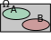

Phénomènes aléatoires - 1 Probabilités et variables aléatoires
Modéliser
Même si des calculs concernant des risques ou des jeux de hasard ont été faits depuis l'antiquité, on date
le
début de la théorie des probabilités de la correspondance entre Blaise Pascal et Pierre de Fermat (1654) à
propos du «problèmes des
partis».
Notion de modèle
On lance un dé cubique et on note le numéro de la face supérieure.
Cette expérience est une expérience aléatoire dont les issues (résultats possibles) sont 1, 2,
3,
4, 5, 6 :
Issue
1
2
3
4
5
6
Probabilité
\( \frac{1}{6} \)
\( \frac{1}{6} \)
\( \frac{1}{6} \)
\( \frac{1}{6} \)
\( \frac{1}{6} \)
\( \frac{1}{6} \)
Une réalisation (que l'on appelle «épreuve») de cette expérience (réalité ou simulation), doit
forcément
aboutir à l'une de ses issues ; on ne sait pas laquelle exactement.
L'ensemble des issues est \( \Omega = \left\{1{,}\, 2{,}\, 3{,}\, 4{,}\, 5{,}\, 6 \right\} \).
Définir une probabilité, pour une expérience aléatoire, consiste à :
attribuer à chacune des issues \(x_i\) un nombre \(p_i\) positif ou nul, appelé probabilité de
\(x_i\), de sorte que l'on ait \( p_1+\cdots+p_n=1=100\% \)
Il y a 86% d'élèves droitiers dans ce lycée.
Quelle est la probabilité de tomber au hasard sur un élève qui ne le soit pas ?
100%-86% = 14% d'élèves non droitiers (attention à la formulation, il faut éviter de dire «gaucher»
car
il peut y avaoir des élèves ambidextres).
Le dé suivant est truqué :
Issue
1
2
3
4
5
6
Probabilité
\( \frac{1}{10} \)
\( \frac{1}{10} \)
\( \frac{1}{10} \)
\( \frac{1}{10} \)
\( \frac{1}{10} \)
\( \ldots \)
\(\frac{1}{2}\)
Calculer \(p(6)\), la probabilité d'obtenir un six.
Notation somme : Une somme telle que \(p_1+\cdots+p_n\) se note, de manière condensée, à l'aide
du
symbole sigma (\(\Sigma\)) : \( \displaystyle\sum_{i=1}^n p_i\)
Calculer \( A=\displaystyle\sum_{i=1}^7 i\) et \( B=\displaystyle\sum_{i=1}^4 i^2\)
\( A=\displaystyle\sum_{i=1}^7 i = 1+2+3+4+5+6+7 = 28\) et \( B=\displaystyle\sum_{i=1}^4 i^2 =
1^2+2^2+3^2+4^2=1+4+9+16 = 30\)
(PISA) développer une intuition d'une probabilité :
Un géologue a affirmé :
«Au cours des 20 prochaines années, la probabilité que se produise un tremblement de terre à Springfield est
de
2 sur 3»
Parmi les propositions suivantes, laquelle exprime le mieux ce que veut dire le géologue ?
Puisque \(\frac{2}{3}\times20\approx13{,}3\), un tremblement de terre aura lieu à Springfield dans
13 à
14 ans.
Puisque \(\frac{2}{3}>\frac{1}{2}\), on est sûr qu'il y aura un tremblement de terre à
Springfield
dans les 20 ans.
La probabilité d'avoir un tremblement de terre dans cette ville est plus forte que celle de ne pas
en
avoir.
On ne peut rien dire, car personne n'est sûr du moment où un tremblement de terre se produit.
La réponse c.
Construire un modèle
Dans la grande majorité des cas, on utilise l'une de ces deux façons de déterminer les probabilités \(p_i\)
associées aux issues \(x_i\) :
Par le choix de l'équiprobabilité.
Le lancer d'une pièce de monnaie bien équilibrée :
Issue
pile
face
Probabilité
0,5
0,5
Dans une situation d'équiprobabilité, Toutes les issues
possèdent la même
probabilité.
Étude statistique - observer les fréquences
On lance un dé truqué un grand nombre de fois (10 000, par exemple) et on note le résultat dans
le
tableau suivant :
Issue
1
2
3
4
5
6
Probabilité
\( 0{,}125 \)
\( 0{,}125 \)
\( 0{,}125 \)
\( 0{,}125 \)
\( 0{,}2 \)
\( 0{,}3 \)
On décide alors que l'on a expérimenté un nombre suffisant de lancers pour que les futurs
lancers
de ce dé respectent les mêmes fréquences que celles de cette expérience. Cette «décision» établit un
modèle probabiliste : on peut remplacer le mot «Fréquence» (qui est du domaine de la
statistique)
dans le tableau par le mot «probabilité».
Étude statistique ou équiprobabilité ?
Le choix de l'équiprobabilité se fait lorsqu'il est suggéré dans l'énoncé (pièce équilibrée, tirage dans
une
urne au hasard).
Si on est dans une situation où les probabilités de chaque issue n'ont aucune raison d'être les mêmes,
on
doit
mener une étude statistique.
Étude statistique ou équiprobabilité ? Le préciser.
On lance un dé bien équilibré.
Équiprobabilité.
On choisit au hasard une consonne dans l'alphabet.
Équiprobabilité.
Probabilité qu'un foyer français ait 2 enfants.
Étude statistique.
Tomber sur le zéro sur une roulette de casino (numérotée de 0 à 36).
Équiprobabilité la plupart du temps, étude statistique possible (vérifier si
le
croupier a un biais de lancer, triches, etc).
Que M. Dupont, 40 ans, que l'on ne connaît pas, attrape la grippe l'hiver prochain ?
Étude statistique.
Qu'une tartine tombe du côté de la confiture ?
Il ne faut pas faire tomber les tartines.
Prévoir
Probabilité d'un événement
On lance un dé cubique et l'on considère l'événement \(A\) : «obtenir au moins 5».
issues favorables à \(A\) (qui réalisent \(A\) ) sont 5 et 6 ; on note
\(A=\left\{5;6\right\}\).
Pour le dé truqué (utilisé précédemment), si \(P(5)=0{,}2\) et \(P(6)=0{,}3\) alors
\(P(A)=0{,}2+0{,}3=0{,}5\) .
Pour un dé équilibré (situation d'équiprobabilité) : \(P(5)=P(6)=\frac{1}{6}\) alors
\(P(A)=\frac{1}{6}+\frac{1}{6}=\frac{1}{3}\)
Un événement \(A\) est un sous-ensemble (aussi appelée partie) de l'univers \(\Omega\) (on note
\(A\subset\Omega\), on dit «\(A\) inclus dans \(\Omega\)»).
La probabilité \(P(A)\) est la somme des probabilités des issues favorables à \(A\).
Pour tout événement \(A\), on a : \(0\leqslant P(A)\leqslant 1\)
On a \(P(\Omega)=1\).
L'événement \(B\) : «obtenir un \(7\) sur un dé est impossible : \(P(B)=0\). On identifie
à
l'ensemble vide noté \(\emptyset\) tout événement impossible (\(B=\emptyset\)).
Dans une situation d'équiprobabilité, la probabilité d'un événement \(A\) est : \(P(A)=\frac{\textrm{nombre d'issues favorales à }A}{\textrm{nombre d'issues
possibles}}\)
Opérations sur les événements
Si \(A\) et \(B\) sont deux événements,
On note \(\overline{A}\) l'événement complémentaire de \(A\) (toutes les issues qui ne
réalisent
pas
\(A\).)
L'événement \(A\cap B\) est l'ensemble des issues qui réalisent \(A\) et \(B\)
(simultanément).
L'événement \(A\cup B\) est l'ensemble des issues qui réalisent \(A\) ou \(B\) (au
moins
l'un
des
deux).
On lance un dé cubique et équilibré, et on note les événements suivants :
\(A\) : «obtenir un nombre pair»
\(B\) : «obtenir un le nombre minimal ou le nombre maximal»
On obtiens les resultats suivants (tableau ci-contre)
Union quelconque :
\(P(A\cup B)=P(A)+P(B)-P(A\cap B)\)

Union disjointe :
Si \(P(A\cap B)=0\), alors \(P(A\cup B)=P(A)+P(B)\)
Lorsqu'on sait que \(A\) et \(B\) ne peuvent être réalisés simultanément ; \(A\) et \(B\) sont dits
incompatibles ; dans ce cas on a \(P(A\cap B)=0\).
\(A\) et \(B\) sont deux événements quelconques ; exprimer \(P(A\cap B)\) en fonction
de
\(P(A)\),
\(P(B)\) et \(P(A\cup B)\).
\(P(A\cap B)=P(A)+P(B)-P(A\cup B)\)
\(P(A)=0{,}7\) et \(P(B)=0{,}6\).
Montrer que \(A\) et \(B\) ne peuvent pas être incompatibles.
En dégager une condition sur les probabilités de \(A\) et \(B\) impliquant que ces deux événements
soient
incompatibles.
On raisonne par l'absurde et on suppose qu'ils sont incompatibles :
\(P(A\cap B)=P(A)+P(B)-P(A\cup B)=1{,}3>1\) ce qui pour une probabilité est impossible.
Chaque ligne du tableau représente une situation différente. Compléter le tableau.
\(A\)
\(B\)
\(\overline{A}\)
\(\overline{B}\)
\(A \cap B\)
\(A \cup B \)
0,2
0,5
0,8
0,5
0,1
0,6
0,6
0,4
0,4
0,6
0
1
0,3
0,3
0,7
0,7
0,1
0,5
0,4
0,2
0,6
0,8
0,2
0,4
Si \(A\) et \(B\) sont deux événements quelconques, on a toujours :
\(P(A\cap B)\leqslant \begin{array}{c}P(A)\\P(B)\\ \end{array}\leqslant P(A\cup B)\)
Lois de Morgan :
\(\overline{A\cap B}=\overline{A}\cup\overline{B}~~\textrm{et}~~\overline{A\cup
B}=\overline{A}\cap\overline{B}\)
Utiliser les lois de Morgan pour exprimer \(\overline{(A\cap B)\cup \overline{B}}\) en fonction de \(A\),
\(B\),
\(\overline{A}\) et
\(\overline{B}\).
\(
\overline{(A\cap B)\cup \overline{B}}
= \overline{A\cap B}\cap B
= \left(\overline{A}\cup\overline{B}\right)\cap B
= \left(\overline{A}\cap B\right)\cup\left(\overline{B}\cap B\right)
= \left(\overline{A}\cap B\right)\cup\emptyset
= \overline{A}\cap B
\)
Erreur de d'Alembert
Quelle est la probabilité d'obtenir au moins une fois pile en deux lancés successifs ?
Remarque : D’Alembert avait fait un raisonnement faux dans le calcul de la probabilité,
dans l’article « croix ou pile » de l’Encyclopédie .
De l’existence de 3 cas (pile au premier lancer, pile au second lancer, aucun lancer ne donnant pile),
il
avait déduit que la probabilité était 2/3.
Cette probabilité est de \(\frac{3}{4}\).
Variables aléatoires (réelles)
Définition
Une fonction réelle définie sur un univers \(\Omega\) est appelée variable aléatoire.
Souvent, une variable aléatoire est utilisée pour rendre compte des gains dans un jeu
de
hasard.
On lance un dé (6 faces, bien équilibré), puis une pièce (bien équilibrée) ;
si le dé donne 1, on gagne 5€ ;
si le dé donne 6, on gagne 10€ ;
si le dé donne un nombre compris entre 1 et 5 inclus, on ne gagne rien (0€) ;
ensuite en lançant la pièce, aux gains obtenus avec le dé :
on ajoute 5€ si la pièce donne pile ;
on enlève 5€ si la pièce donne face ;
on note alors \(G\) les gains ou pertes (\(G\) peut être négatif !) à la fin du jeu.
Compléter l'arbre décrivant les possibilités de ce jeu.
Arbre à compléter
Quelles sont les valeurs possibles de \(G\) ?
Calculer \(P(G=5)\), c'est à dire la probabilité de gagner 5€ à ce jeu.
Pourquoi est-il vrai que \(P(G=-10)=0\) ?
Loi de probabilité
Notons \(I=\left\{x_1;...;x_n\right\}\) l'ensemble des valeurs, rangées par ordre croissant, prises
par
une
variable aléatoire \(X\) sur un univers \(\Omega\).
On manie ici des variables aléatoires ayant un nombre fini de valeurs (variables
aléatoires
discrètes). En utilisant des intégrales, plus tard, on pourra manier des variables alétoires dites
continues,
possédant un nombre infini de valeurs.
La loi de probabilité de \(X\) associe chaque valeur \(x_i\) de \(X\) à sa
probabilité
\(P(X=x_i)\).
on écrit souvent une loi sous la forme d'un tableau, présenté de la manière suivante :
\(X\)
\(x_1\)
\(x_2\)
\(\cdots\)
\(x_n\)
prob
\(P(X=x_1)\)
\(P(X=x_2)\)
\(\cdots\)
\(P(X=x_n)\)
\(G\)
...
...
5
...
...
prob
\(\frac{5}{12}\)
Compléter la loi de probabilité de \(G\), la variable aléatoire manipulée dans l'exemple précédent.
Espérance
Lorsque \(X\) est une variable aléatoire de valeurs \(x_1,\ldots,x_n\), on note \(E(X)\)
l'espérance
de
\(X\). C'est la moyenne des valeurs de \(X\) pondérée (= «coefficientée») par les
probabilités :
\( E(X) = \displaystyle\sum_{i=1}^n\,P(X=x_i)\,x_i \)